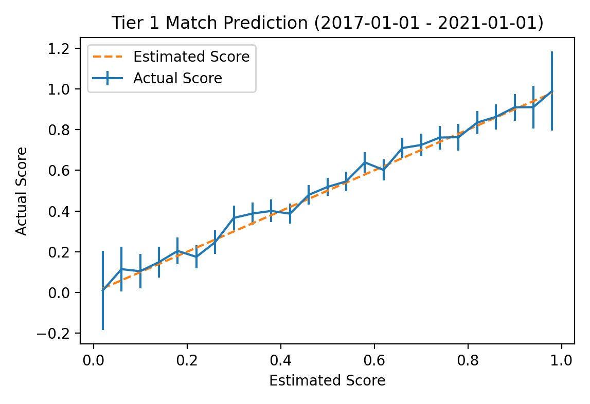

The prediction model uses a standard Elo rating system with the following adjustments:
Ratings are predominately player-based rather than team-based. Win probabilities and rating adjustments are still calculated using team ratings, where a team's rating is equal to the average of that team's player ratings. This helps deal with some of the issues traditional Elo models run into with Dota 2 (frequent substitutes, organization/team ID changes, roster instability, etc.). The team rating adjustment after each match is distributed unequally among players such that each player's rating drifts towards the team rating -- thus, if a team maintains a consistent roster for a long period of time its players will eventually end up with identical ratings. This is accomplished by calculating each player's share of a rating adjustment as
$$f(p_{i})=\frac{r_{i}}{\sum_{j}r_{j}}$$
if the team loses and
$$f(p_{i})=\frac{1/r_{i}}{\sum_{j}1/r_{j}}$$
if the team wins, where \(r_i\) is player i's rating and \(f(p_i)\) is player i's share of the team's rating adjustment. Note that player ratings shouldn't be interpreted as individual player skill, because the model can't measure skill gap within a team. The main advantage is that this system is able to handle roster signings and major roster changes much better than a model which only assigns ratings to team IDs. It is also able to make a decent estimate of a newly-formed team's initial rating.
Since model version 0.4, final ratings use a combination of player ratings and team ID ratings. New team IDs are given an initial rating equal to the team's player rating, then updated alongside the player ratings. The longer the team ID remains in use, the more it contributes to the combined rating (starting at 0% for 0 matches played and rising linearly to 33% at 100 matches played). The team ID rating never makes up more than 33% of the combined rating. This reduces the rating drop which occurs when established teams add up-and-coming players while still relying primarily on player ratings.
Ratings are updated based on series results rather than individual game results. As with a typical Elo system the rating update formula is \(r_{new} = r_{old} + k(score_{actual} - score_{expected})\). The number of matches a team is expected to win in a series is simply \(match\_count \times win\_probability\)*, so \(score_{actual}\) is the percentage of matches the team won (e.g. 66.67% for a 2-1) and \(score_{expected}\) is their win probability.
*As with a typical Elo system the win probability of team 1 is calculated as
$$\frac{1}{1+10^{(r_{2}-r_{1})/400}}$$
where \(r_1\) is team 1's rating and \(r_2\) is team 2's rating.
Online matches are far more common than offline matches, so estimating the strength of teams which don't frequently play at LAN events can be difficult. To help deal with this, the model maintains a global rating adjustment for each of the six DPC regions (North America, South America, Western Europe, Eastern Europe, China, and Southeast Asia). Whenever a team plays a match against a team from a different region, 10% of the rating update is applied to the team's region.
As an example, suppose a team from North America with a rating of 1600 loses to a team from Southeast Asia with a rating of 1750. With a k value of 60, this would result in a rating adjustment of 18. The Southeast Asian team would therefore have an updated rating of 1768, and the North American team would have an updated rating of 1582. Because the match is international, 10% of this rating update is applied to the region as whole. The rating of all other North American teams will decrease by 1.8 points, and the rating of all other Southeast Asian teams will increase by 1.8 points.
Keeping the region share small means it will have a fairly small effect on teams which frequently play international matches. The main purpose is to improve ratings for teams which don't frequently play at LAN events.
Starting from model version 0.4, players have two ratings: a LAN rating and and online rating. I don't have ground truth match setting data, so matches are determined to be LAN/online based on the following rule: for every three-day window of matches played on a single league ticket, there must be teams representing at least 4 unique DPC regions for the matches to be considered LAN. Otherwise the matches will be considered online. To prevent qualifiers played within the same window from being marked as LAN matches, matches between teams of the same region are discarded. LAN events aren't always international and not all international events are played on LAN but without ground-truth data this seems to be the best option available.
Splitting ratings in this way improves predictions for the 2021 DPC season, but makes predictions worse for prior years. Because the current DPC system has only been in place for one year, it remains unclear whether splitting LAN/online ratings is better because there are fewer international events now or because the 2021 season was simply an outlier. Because of this, the ratings are currently fairly closely tied:
Because the model was designed to make predictions for high-profile tournaments, it places greater weight on results at high-profile tournaments. Specifically, the k factor decays relative to the tier of the tournament by a factor of \(t^{-.75}\), where t is the Liquipedia tier of the tournament. Only events with a Liquipedia tier of 1 - 3 are used to compute team ratings.
To account for the uncertainty following the post-TI roster shuffle, all ratings are decayed towards 1500 by 80% after each TI. The prediction improvement from this adjustment is not consistent but it is particularly helpful for years with large reshuffles. This has the added benefit of slowly reducing the rating of players who have been inactive for large periods of time.
Predicting lower division leagues is difficult because many of the players are entirely unknown. One issue this causes is that open qualifier teams tend to be overrated by the model simply because the only matches many of their players have appeared in were the ones in the open qualifier (which, of course, they won). To deal with this, starting with model version 0.4 players are started at a rating of 1400 (rather than the intended average of 1500) and receive a fixed rating adjutment of +5 after each their first 20 matches. This is a fairly simplistic solution but seems to do a decent job of improving lower division prediction. Prior to model version 0.4, ratings were also updated more slowly for higher rated teams, but after all the other minor changes the prediction gain from this adjustment was no longer significant.
Elo predictions use a base k parameter of 35. I tuned these parameters using all matches up to January 1st, 2017 (the earliest match in my database took place on Feb 1st, 2013), then computed evaluation metrics over all tier 1 matches from then until January 1st, 2021. Note that qualifiers are frequently played on the same league ticket as the main event so this includes a lot of open qualifier matches. A plot comparing estimated win probability with actual win probability is shown below:  The vertical lines on the actual probability plot represent 95% standard error bars for the sampled win percentage. The largest error is for the 344 series for which the model predicted the favored team would win 58% of games; in actuality, the favored team won 63.9% of these games with a standard error of 2.6%. Over all tier 1 matches in the evaluation time frame the model achieved a Brier Skill Score of 0.186. For additional reference, the same plot for all matches in tier 3 or better tournaments is shown below.
For Elo model predictions on the website, the simulator updates model ratings over the course of the simulation based on the simulated results. For example, if Team A has a 10% chance to win their first match, then in the 10% of simulations in which they do so their rating will be improved accordingly and they will be more likely to win subsequent matches as a result. This widens the distribution of the simulated results a little, resulting in slightly lower high probabilities and slightly higher low probabilities.
Note that the calibration plots shown above are for individual games, not series. When using game probabilities for expected wins in series, the probability of draws in bo2s and 1-2/2-1 results in bo3s is slightly overestimated. The Elo model estimates based solely on game probabilities that 45% of bo2s (calculated from TI7 to TI9) should draw, but only 40% of the 216 bo2s played at a TI from 2017 to 2019 and drew -- when including all TIs up to 2019, this number drops to 37%. To deal with this gap, the sampler applies a momentum factor when estimating bo2 probabilities. When a team wins the first game, their likelihood to win game two is increased by the momentum factor (up to a maximum of 95%). Based on TI statistics, the momentum factor is set at 5%.
Because TI is in a sort of class of its own and many teams perform very differently at TI than they do in year leading up to it, I exaggerate this effect by starting the simulator's k parameter at double its base value on the first day of the group stage. It then decays by a linear factor each day until returning to its normal value on day 4. This means that all predictions will be reasonably conservative to start with, but the model will become increasingly confident in its team ratings as the group stage progresses. The modifier only applies to simulated results, not actual results, so match probabilities are not affected -- team ratings will increase or decrease as normal regardless of what day it is.